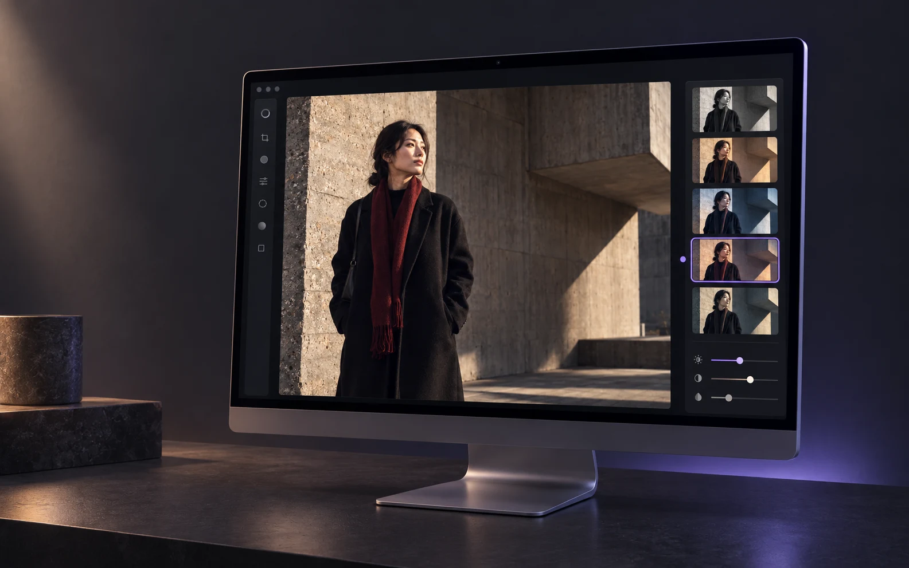
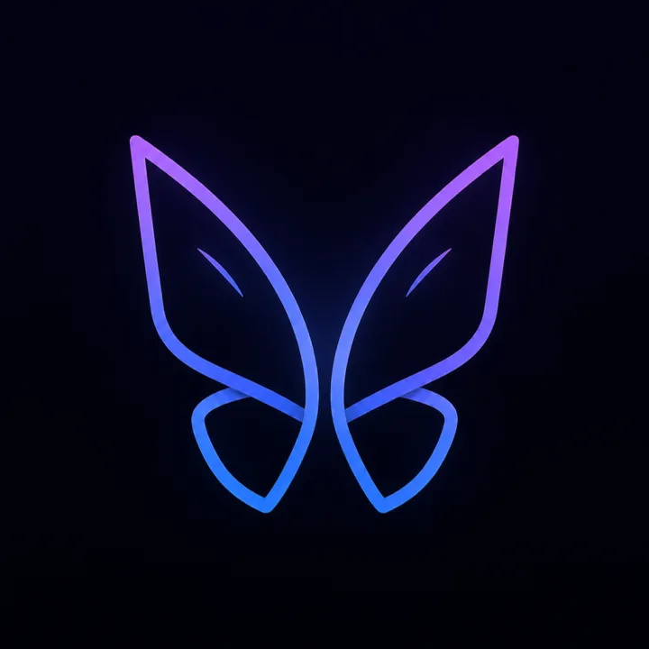
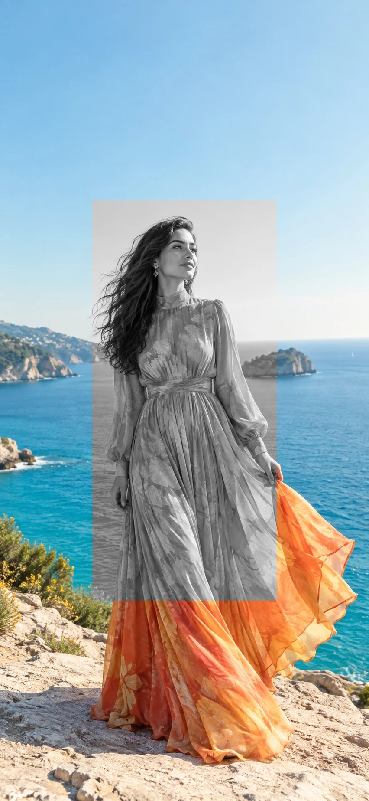
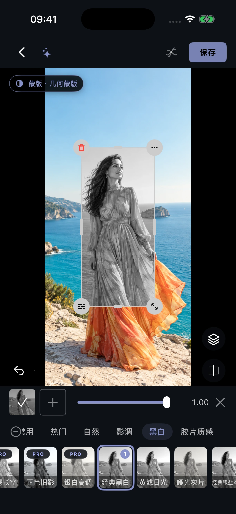
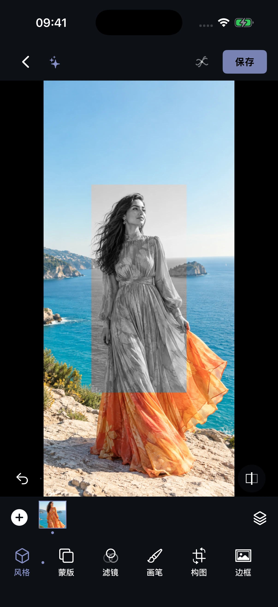
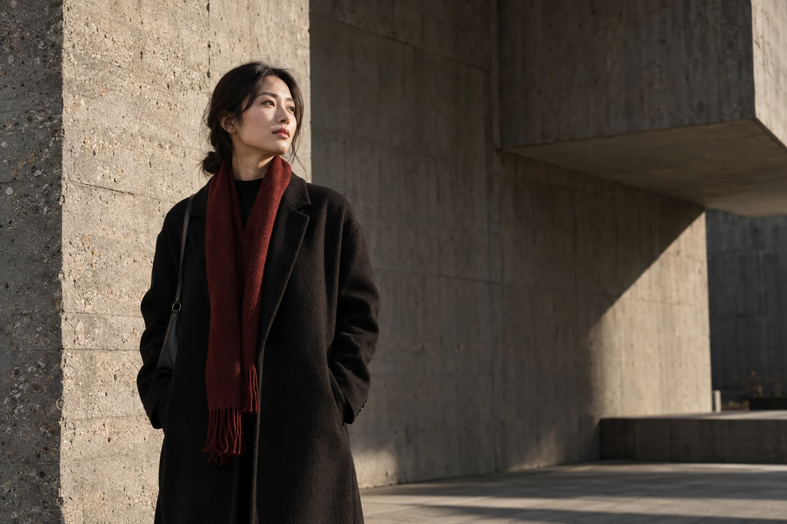
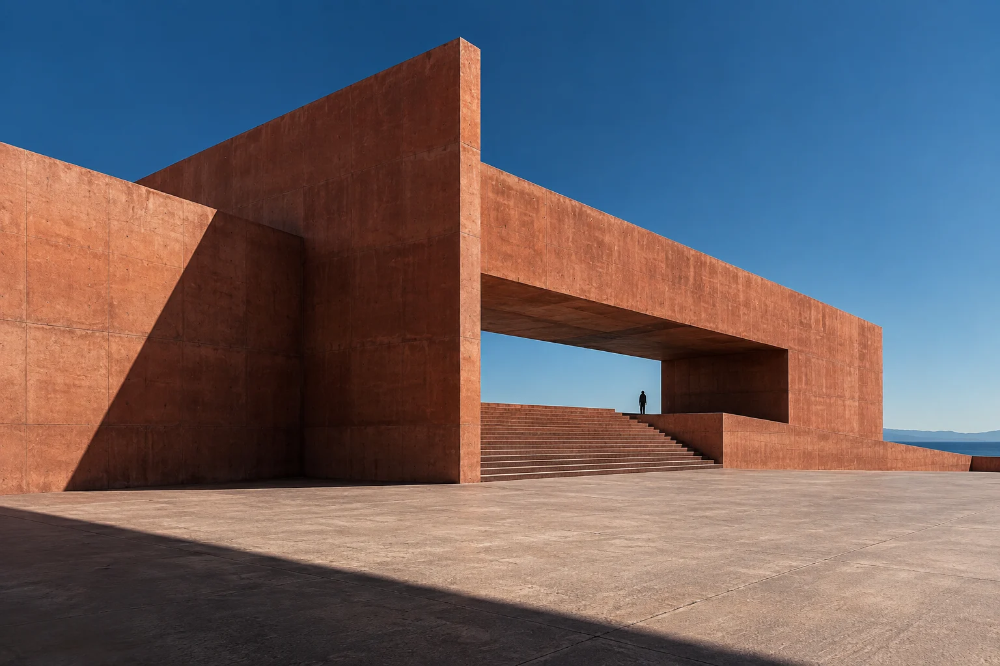
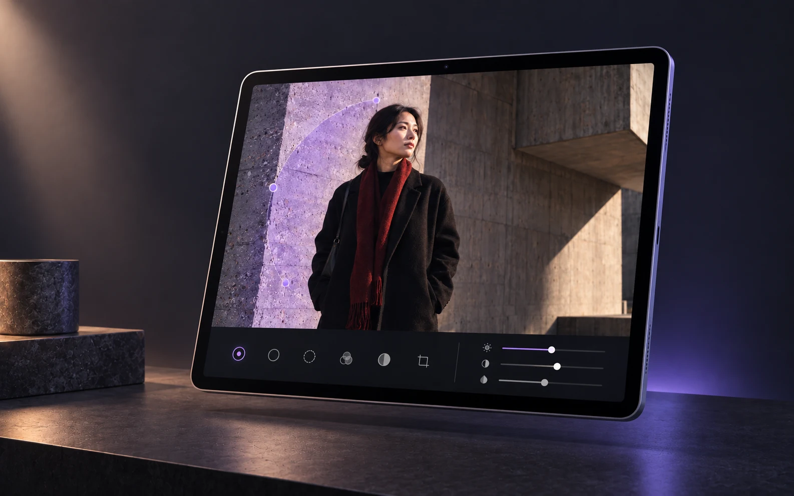
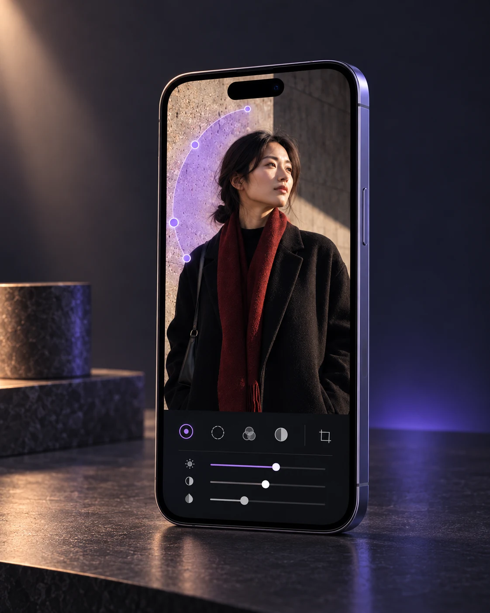

宽阔的整体视野。
在更大的屏幕上比较光影、色彩与质感。

AwakingApple 平台照片编辑器
品牌摄影 · AI 创作
用滤镜找到方向，用蒙版限定变化，再回到工作台继续调整。看看同一张照片，如何保留海的颜色，只改变局部。

拖动滑杆，对比原片与实际导出
示例原片由 AI 生成；局部黑白来自 Awaking 的实际编辑与 JPEG 导出。


同一案例的真实 App 界面
从色彩与光影开始，找到照片的整体气质。
把变化放到需要的位置，保留其他区域。
查看、整理局部效果，让每一步选择保持清楚。
人像的光、建筑的结构、雨后街道的颜色。先感受画面，再决定它要去的方向。


以下为 AI 创作的风格灵感，非 Awaking 导出案例。
iPhone、iPad 与 Apple silicon Mac。选择当下手边的设备，把整体方向和局部细节一起完成。

在更大的屏幕上比较光影、色彩与质感。

在照片和工具之间，专注需要改变的细节。

随时回到颜色和局部细节，完成眼前这一张。
从设备选择照片，在本地开始。
用滤镜、调色、构图、布光与特效找到方向。
通过蒙版与画笔，让调整落在需要的位置。
检查图层、继续调整，保存作品到本地。
导入照片、完成基础编辑、撤销与重做，并保存无水印标准 JPEG。无需账号。
解锁精选高级滤镜、蒙版模板、特效与高质量导出。商品和价格以 Apple 购买页为准。
iPhone / iPad：iOS / iPadOS 16 或更高版本。Mac：Apple silicon，macOS 13 或更高版本。
已在 App Store 上线
下载 Awaking，在新窗口打开 App Store